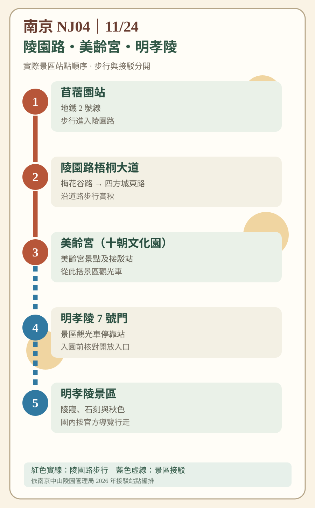

陵園路・美齡宮・明孝陵

今日走法
搭地鐵 2 號線至苜蓿園站，步行欣賞陵園路梧桐大道，抵達美齡宮。遊覽後由美齡宮（十朝文化園）站搭景區觀光車，經海底世界、東郊國賓館前往明孝陵 7 號門。
景區內各景點間的實際步行道路，依現場指標及高德地圖導航。
景點導航
接駁與門票
官方公布觀光車單次人民幣 10 元、當日不限次 30 元；現場班次與營運依當日公告。美齡宮與明孝陵分別購票，也可評估官方聯票。

搭地鐵 2 號線至苜蓿園站，步行欣賞陵園路梧桐大道，抵達美齡宮。遊覽後由美齡宮（十朝文化園）站搭景區觀光車，經海底世界、東郊國賓館前往明孝陵 7 號門。
景區內各景點間的實際步行道路，依現場指標及高德地圖導航。
官方公布觀光車單次人民幣 10 元、當日不限次 30 元；現場班次與營運依當日公告。美齡宮與明孝陵分別購票，也可評估官方聯票。